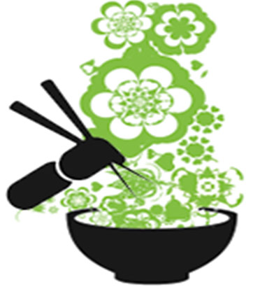
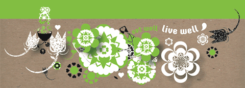

The word "KenKou" means healthy in Japanese. Taking inspiraiton from this we aim to create food for those on the go who want to maintain a healthy lifestyle by eating delicious and balanced meals.
Our recipes have all been created with nutrition and taste at the for front of our philosophy and we want you to get a feel for this in our bespoke designed packaging.
Our ethos is simple - a pure, fresh and creative approach relfected in our food, stores and packaging.
We hope you enjoy!



Contact Us
Address:
KenKou head office
7 The Hill,
Stillorgan,
Co. Dublin
Click here to view the full site